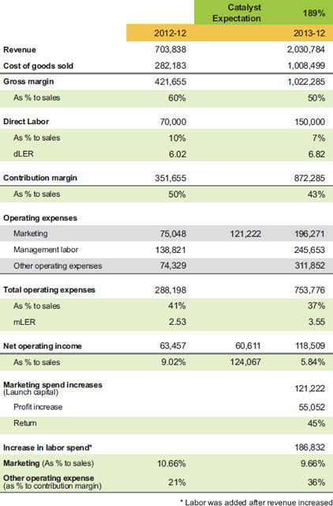

LAUNCH CAPITAL FOR GROWTH PHASE: THE MAGIC PIXIE DUST OF BUSINESS
Entrepreneurs trying to grow their business
are really running a legal gambling
establishment! Improve your odds
to grow smartly to beat the house!
– Greg Crabtree
It is easy to understand the story I told in Chapter 5 about launch capital for Bob’s next store. As I continued to study business models and conduct analysis calls with clients, it became clear that we were always making adjustments for special spending to explain why profit was down. Every entrepreneur likes to experiment. They hear what someone else did and want to give it a try— a new form of marketing, a new key executive who promises to be the missing link to sales, a high-priced consultant with the right elixir to cure all your ailments.
All those things can be either productive or destructive, but you need to establish an outcome expectation like we did for Bob’s next store. Once you have a framework for setting the expectation, you can evaluate the new spending with a clearer mind. You will not be able to predict the outcome, but you will be able to hold the experiment accountable, like my respiratory client did when he jettisoned bad locations to save precious capital (see Chapter 5).
Causation versus Correlation in Spending and Growth
The idea of setting expectations for special spending began to gel when I was working with a software company. They were fortunate enough to have a customer-funded business model like John Mullins talks about in his book The Customer-Funded Business (which I highly recommend). Since this company often collected one to three years of annual subscriptions up front, they never had to search for cash to grow the business. What they had to search for was the catalytic spend that would accelerate growth.
A catalytic spend is when you bet that
an expenditure will fuel growth.
When a software company is built to sell from its inception, growth experts question the company’s motive to be profitable. They say the company’s goal should be to spend every cent of their available cash to grow. I am all for that idea if you know the causation effect of spending on growth. But when you know only the correlation of spending and growth, you can become wasteful in your spending strategies to spur growth. Did you grow because of your spending, or in spite of it?
Each year my software client diligently planned for their growth spending, and we plotted the potential increase in the business value if the results turned out as predicted. For a fourto five-year period they risked annually between $500,000 and $1 million on growth initiatives (sales, marketing, and technology development), and I asked them to evaluate how the spending impacted sales. Each year they admitted that there was little to no effect. The company was indeed growing, but that growth was organic and resulted mostly from the strong market position of their product in their particular niche.
I think the company could have saved and distributed about $4 million if they had not wasted so much on growth initiatives, but the company sold for a very nice number and you do not have to feel sorry for them. Their annual planning exercise drove home a point to me. I started to identify discretionary and catalytic spending and wondered if we could measure the impact.
How to Measure Success in Growth Spending
I decided that the most critical measure of spending success had to be an increase in net income. If I use revenue to measure success, there is too much of a tendency to give up price and margin to increase volume. There are some risky build-to-sell business strategies that focus on getting sales first and profit later. This approach was used by many online retailers until about 2015 or 2016. Since then, the buyer market for these types of businesses has dried up. Many of those who did buy these companies have remorse and are stuck with businesses that have high revenue, no profit, and no way to become profitable. As my good friend Alan Miltz, creator of cashflowstory.com, says, “Revenue is vanity, profit is sanity, and cash flow is king!ˮ
I considered using gross margin or contribution margin to measure spending success. Both of these are better than using revenue, but they still allow for giving in on price and stressing the labor support model, even though some extra margin dollars were produced. For as harsh as it may be, profit needed to be my yardstick.
Next I had to decide on the time frame. In considering how long to wait for a return, I stuck with my idea for the business model itself: a minimum of 12 months, a maximum of 24 months. Some high-risk, high-return businesses might need longer, but they are in the minority. A business will not reach its fullest growth potential from spending for 12 to 24 months, but it should be far enough along to begin reaping rewards and growing profitably.
A Real-World Example Over Five Years
To demonstrate this idea in the real world, a client of ours allowed us to share his phenomenal experience over a five-year growth cycle. Since we held monthly calls with the client during this time, we knew that their catalytic spend was an annual increase in marketing expenses over the previous year’s maintenance spend. Their discretionary choice to add to the annual marketing spend was the first cost; they had the luxury of adding labor and other operating costs only after they knew that new revenue was flowing. Companies will not always have that luxury, but they did. Also, their marketing spending was not transactional, such as spending for AdWords or search engine optimization; it was old-fashioned travel, entertainment, and trade shows.
Their story starts in the first year we started working with them when they had $700,000 in revenue. They had just started getting profitable and felt like they needed to risk some new spending to drive their business (see table 6.1).
They decided to make a bold move and increase their marketing spend by $121,000 over the previous year’s spend of $75,000. That meant an increase of $60,000 in net income was needed to claim success. You can see that they got close, which is not bad for a first effort with a 45% return. As you can see, their other costs increased, but we know that those were after the marketing spend and after the new revenue streams were known.
Launch capital example: Year 1

* dLER is direct labor efficiency ratio. mLER is management labor efficiency ratio.
At this point we have to revisit my three simple rules for business success from Chapter 1 and reevaluate:
- Did they figure out what the market needs? Check! The new revenues and customers were a sign that they were on the right path and there was more market share to be had.
- Did they find a way to do it profitably? Check! Their profit was not as high as they would like, but they have a very low capital signature, and even at 5% profit they were cash-flow positive.
- For the amount of required capital, did they achieve a pretax profit of 50% or better return on invested capital (ROIC)? Check! Since their business model allowed them to get paid before they paid their vendors, they were above 50% ROIC, even at 5% net income to revenue.
Let’s look at year 2 in table 6.2. Jackpot!
When something works well, do you have the guts to keep going? The company decided they needed to increase spending again, but they wanted to trim the additional amount to $100,000. That means their increase in profit success over the previous year was now defined at $50,000. They had a blend of recurring and onetime customers, so they needed to continue marketing to existing customers and find new ones.
Launch capital example: Year 2

You can see in table 6.2 that they blew their $50,000 goal out of the water with a 493% return, and their profit jumped to $628,000 at 17% to revenue! Part of this extra profit came from the previous year’s new customers reaching full potential. Unless you analyze specific customers, it is hard to tell how much came from the current year increase in marketing spend versus the prior year since the company continued to pay for travel to all clients for ongoing marketing and to defend them from competitors. They would definitely benefit from tracking sales growth for both new and existing customers and reporting the results regularly.
In two short years this company jumped from $700,000 to $3,600,000 in revenue; more importantly, they jumped to $628,000 in net income at a rate of 17.36%! Should they sit here and harvest, or should they push ahead? This is always a critical juncture for an emerging business, and there are several key questions to answer:
- Are you in the black hole? This company is right in the middle of the black hole, which is defined as between $1 million and $5 million in revenue (or in certain circumstances, gross margin). The deepest, darkest moment is usually at $3 million. If you are profitable at $3 million, you are usually functioning with your hair on fire because you have an unsustainable labor structure and not enough, or not the right, management to keep things together. Your only choices are to pull back to $2.5 million or less to maintain sanity and reduce stress, or push through to $5 million and upgrade your management processes and people.
- What do you want as an owner? Some people think they have hit the jackpot if they make $600,000 in profit above their market wage. Others want to know if there is more market share to be had.
- Are you maintaining 50% ROIC or better as you grow? My client was at well over 100%, which was definitely a green light.
What did my client decide? To keep going!
Their next cycle, illustrated in table 6.3, exhibits classic entrepreneurial thinking: if a little is good, a lot must be better!